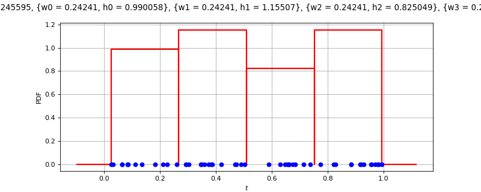
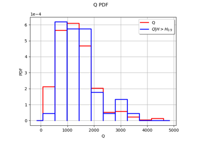
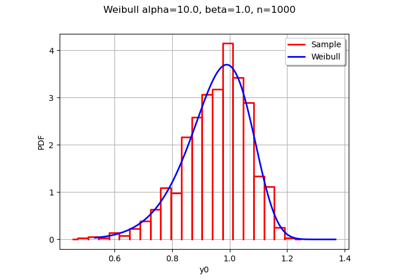
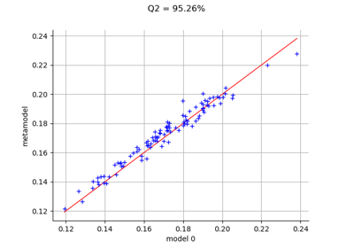

HistogramFactory¶
(Source code, png)

- class HistogramFactory(*args)¶
Histogram factory.
- Available constructor:
HistogramFactory()
See also
Notes
The range is
![[min(data), max(data)]]() .
.See the computeBandwidth method for the bandwidth selection.
Examples
Create an histogram:
>>> import openturns as ot >>> sample = ot.Normal().getSample(50) >>> histogram = ot.HistogramFactory().build(sample)
Create an histogram from a number of bins:
>>> import openturns as ot >>> sample = ot.Normal().getSample(50) >>> binNumber = 10 >>> histogram = ot.HistogramFactory().build(sample, binNumber)
Create an histogram from a bandwidth:
>>> import openturns as ot >>> sample = ot.Normal().getSample(50) >>> bandwidth = 0.5 >>> histogram = ot.HistogramFactory().build(sample, bandwidth)
Create an histogram from a first value and widths:
>>> import openturns as ot >>> ot.RandomGenerator.SetSeed(0) >>> sample = ot.Normal().getSample(50) >>> first = -4 >>> width = ot.Point(7, 1.) >>> histogram = ot.HistogramFactory().build(sample, first, width)
Compute bandwidth with default robust estimator:
>>> import openturns as ot >>> ot.RandomGenerator.SetSeed(0) >>> sample = ot.Normal().getSample(50) >>> factory = ot.HistogramFactory() >>> factory.computeBandwidth(sample) 0.8207...
Compute bandwidth with optimal estimator:
>>> import openturns as ot >>> ot.RandomGenerator.SetSeed(0) >>> sample = ot.Normal().getSample(50) >>> factory = ot.HistogramFactory() >>> factory.computeBandwidth(sample, False) 0.9175...
Methods
build(*args)Build the distribution.
buildAsHistogram(*args)Estimate the distribution as native distribution.
buildEstimator(*args)Build the distribution and the parameter distribution.
buildFromQuantiles(lowerBound, ...)Build from quantiles.
computeBandwidth(sample[, useQuantile])Compute the bandwidth.
Accessor to the bootstrap size.
Accessor to the object's name.
getId()Accessor to the object's id.
getName()Accessor to the object's name.
Accessor to the object's shadowed id.
Accessor to the object's visibility state.
hasName()Test if the object is named.
Test if the object has a distinguishable name.
setBootstrapSize(bootstrapSize)Accessor to the bootstrap size.
setName(name)Accessor to the object's name.
setShadowedId(id)Accessor to the object's shadowed id.
setVisibility(visible)Accessor to the object's visibility state.
- __init__(*args)¶
- build(*args)¶
Build the distribution.
Available usages:
build(sample)
build(param)
- Parameters:
- sample2-d sequence of float
Sample from which the distribution parameters are estimated.
- paramCollection of
PointWithDescription A vector of parameters of the distribution.
- Returns:
- dist
Distribution The built distribution.
- dist
- buildAsHistogram(*args)¶
Estimate the distribution as native distribution.
If the sample is constant, the range of the histogram would be zero. In this case, the range is set to be a factor of the Distribution-DefaultCDFEpsilon key of the
ResourceMap.Available usages:
build(sample)
build(sample, binNumber)
build(sample, bandwidth)
build(sample, first, width)
- buildEstimator(*args)¶
Build the distribution and the parameter distribution.
- Parameters:
- sample2-d sequence of float
Sample from which the distribution parameters are estimated.
- parameters
DistributionParameters Optional, the parametrization.
- Returns:
- resDist
DistributionFactoryResult The results.
- resDist
Notes
According to the way the native parameters of the distribution are estimated, the parameters distribution differs:
Moments method: the asymptotic parameters distribution is normal and estimated by Bootstrap on the initial data;
Maximum likelihood method with a regular model: the asymptotic parameters distribution is normal and its covariance matrix is the inverse Fisher information matrix;
Other methods: the asymptotic parameters distribution is estimated by Bootstrap on the initial data and kernel fitting (see
KernelSmoothing).
If another set of parameters is specified, the native parameters distribution is first estimated and the new distribution is determined from it:
if the native parameters distribution is normal and the transformation regular at the estimated parameters values: the asymptotic parameters distribution is normal and its covariance matrix determined from the inverse Fisher information matrix of the native parameters and the transformation;
in the other cases, the asymptotic parameters distribution is estimated by Bootstrap on the initial data and kernel fitting.
- buildFromQuantiles(lowerBound, probabilities, quantiles)¶
Build from quantiles.
We consider an histogram distribution with
 bins.
Given a set of probabilities
bins.
Given a set of probabilities ![p_1, ..., p_K \in [0, 1]]() and a set of quantiles
and a set of quantiles  ,
we compute the parameters of the distribution such that:
,
we compute the parameters of the distribution such that:
for
 .
.- Parameters:
- lowerBoundfloat
Lower bound
- probabilitiessequence of float
The probabilities
- quantilessequence of float
Quantiles of the desired distribution.
- Returns:
- dist
Histogram Estimated distribution.
- dist
Examples
>>> import openturns as ot >>> ref_dist = ot.Normal() >>> lowerBound = -3.0 >>> N = 10 >>> probabilities = [(i+1) / N for i in range(N)] >>> quantiles = [ref_dist.computeQuantile(pi)[0] for pi in probabilities] >>> factory = ot.HistogramFactory() >>> dist = factory.buildFromQuantiles(lowerBound, probabilities, quantiles)
- computeBandwidth(sample, useQuantile=True)¶
Compute the bandwidth.
The bandwidth of the histogram is based on the asymptotic mean integrated squared error (AMISE).
When useQuantile is True (the default), the bandwidth is based on the quantiles of the sample. For any
![\alpha\in(0,1]]() , let
, let  be the empirical quantile
at level
be the empirical quantile
at level  of the sample.
Let
of the sample.
Let  and
and  be the first and last quartiles of the
sample:
be the first and last quartiles of the
sample:![\begin{aligned}
Q_3 = q_n(0.75), \qquad Q_1 = q_n(0.25),
\end{aligned}]()
and let
 be the inter-quartiles range:
be the inter-quartiles range:
In this case, the bandwidth is the robust estimator of the AMISE-optimal bandwidth, known as Freedman and Diaconis rule [freedman1981]:
![\begin{aligned}
h = \frac{IQR}{2\Phi^{-1}(0.75)} \left(\frac{24 \sqrt{\pi}}{n}\right)^{\frac{1}{3}}
\end{aligned}]()
where
 is the quantile function of the gaussian standard
distribution.
The expression
is the quantile function of the gaussian standard
distribution.
The expression  is the normalized inter-quartile range
and is equal to the standard deviation of the gaussian distribution.
The normalized inter-quartile range is a robust estimator of the scale of the
distribution (see [wand1994], page 60).
is the normalized inter-quartile range
and is equal to the standard deviation of the gaussian distribution.
The normalized inter-quartile range is a robust estimator of the scale of the
distribution (see [wand1994], page 60).When useQuantile is False, the bandwidth is the AMISE-optimal one, known as Scott’s rule:
![\begin{aligned}
h = \sigma_n \left(\frac{24 \sqrt{\pi}}{n}\right)^{\frac{1}{3}}
\end{aligned}]()
where
 is the unbiaised variance of the data.
This estimator is optimal for the gaussian distribution (see [scott1992]).
In this case, the AMISE is
is the unbiaised variance of the data.
This estimator is optimal for the gaussian distribution (see [scott1992]).
In this case, the AMISE is  .
.If the bandwidth is computed as zero (for example, if the sample is constant), then the Distribution-DefaultQuantileEpsilon key of the
ResourceMapis used instead.- Parameters:
- sample
Sample Data
- sample
- Returns:
- bandwidthfloat
The estimated bandwidth
- useQuantilebool, optional (default=`True`)
If True, then use the robust bandwidth estimator based on Freedman and Diaconis rule. Otherwise, use the optimal bandwidth estimator based on Scott’s rule.
- getBootstrapSize()¶
Accessor to the bootstrap size.
- Returns:
- sizeinteger
Size of the bootstrap.
- getClassName()¶
Accessor to the object’s name.
- Returns:
- class_namestr
The object class name (object.__class__.__name__).
- getId()¶
Accessor to the object’s id.
- Returns:
- idint
Internal unique identifier.
- getName()¶
Accessor to the object’s name.
- Returns:
- namestr
The name of the object.
- getShadowedId()¶
Accessor to the object’s shadowed id.
- Returns:
- idint
Internal unique identifier.
- getVisibility()¶
Accessor to the object’s visibility state.
- Returns:
- visiblebool
Visibility flag.
- hasName()¶
Test if the object is named.
- Returns:
- hasNamebool
True if the name is not empty.
- hasVisibleName()¶
Test if the object has a distinguishable name.
- Returns:
- hasVisibleNamebool
True if the name is not empty and not the default one.
- setBootstrapSize(bootstrapSize)¶
Accessor to the bootstrap size.
- Parameters:
- sizeinteger
Size of the bootstrap.
- setName(name)¶
Accessor to the object’s name.
- Parameters:
- namestr
The name of the object.
- setShadowedId(id)¶
Accessor to the object’s shadowed id.
- Parameters:
- idint
Internal unique identifier.
- setVisibility(visible)¶
Accessor to the object’s visibility state.
- Parameters:
- visiblebool
Visibility flag.
Examples using the class¶

Compare unconditional and conditional histograms


Kolmogorov-Smirnov : get the statistics distribution

Generate random variates by inverting the CDF


Create a polynomial chaos for the Ishigami function: a quick start guide to polynomial chaos


Kriging the cantilever beam model using HMAT

Estimate a probability with Monte-Carlo on axial stressed beam: a quick start guide to reliability


{kind=link}